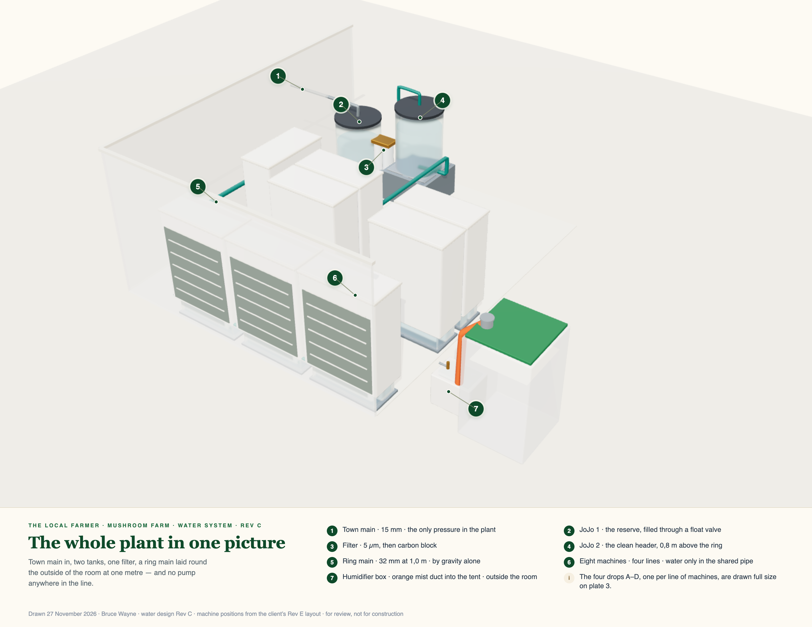

The Local Farmer · Mushroom Farm · Water System · Rev C
The whole plant, drawn in light
One plate, one picture: town main in, two tanks, one filter, a ring main round the outside of the room at
one metre — and no pump anywhere in the line. The four feeds leave the ring at the head of each line of machines.
Prepared 27 November 2026 · Bruce Wayne · rendered from the Rev C model, machine positions from the Rev E layout

Plate 1 — the whole plant. Seven numbered callouts; the four drops A–D are drawn full size on plate 3 of the
illustrated set.
How it was drawn
Rendered, not sketched. The geometry is the same model behind the
3D viewer, lit once and captured flat, so the
tanks are genuinely translucent and the pipes sit where they will sit on site.
Real type. The numbers and the legend are typeset, not painted — no invented lettering, no
decorative pipes that go nowhere.